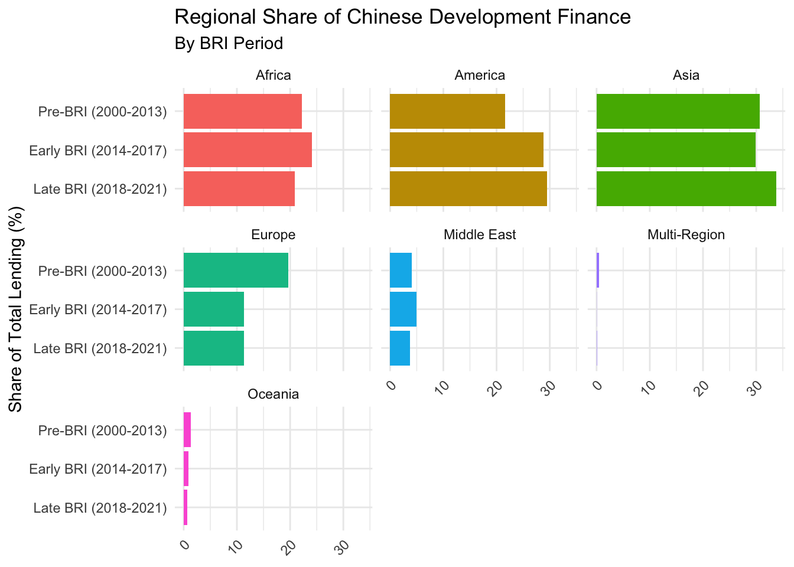
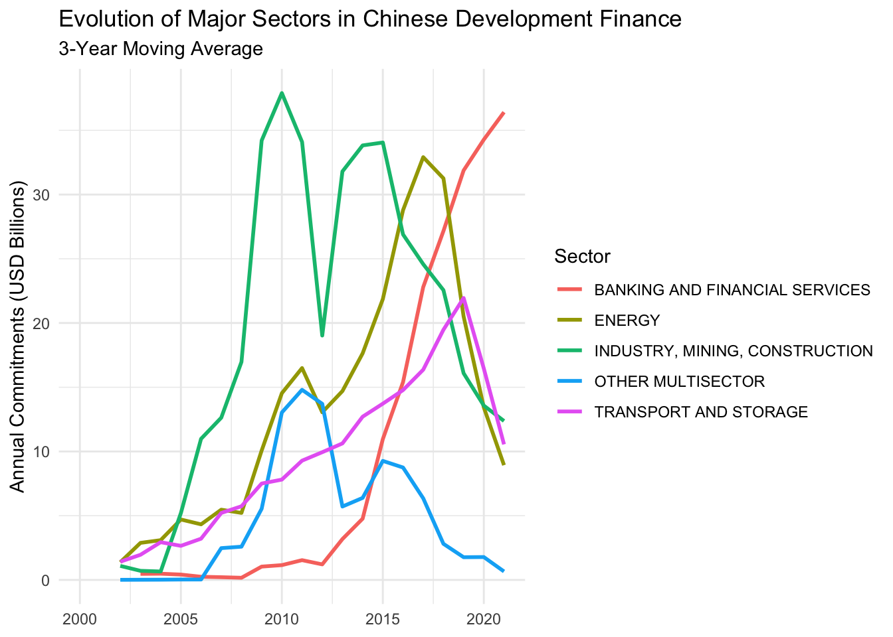
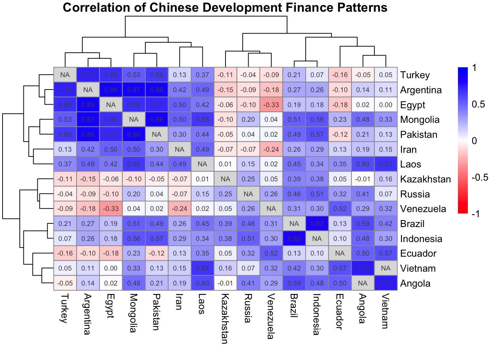

pak::pkg_install(
c(
"slider", # for rolling calculations
"janitor", # for making column names snake_case
"widyr", # for tidy correlation calculation
"pheatmap" # for correlation matrix visualization
)
)6 Week 3: Find Actionable Insights, Quickly (In-Class)
6.1 Today’s Agenda (90 minutes)
- Understanding Pivoting Power (25 min)
- Why pivot at all? The insight toolkit concept
- Demo with mini dataset:
- How humans naturally organize data (wide)
- Why computers prefer tidy data (long)
- Creating insights through strategic pivoting
- Key pattern: longer->group->analyze->wider->compare
- Live Demo: Finding Non-Obvious Insights (20 min)
- Example: Comparing lending patterns
- Pivot longer to analyze by group
- Calculate shares and growth rates
- Pivot wider to compare countries/regions
- Create “repeatable factoids”
- Pattern recognition in Chinese development finance
- Example: Comparing lending patterns
- Guided Practice & Exploration (40 min)
- Suggested research questions like:
- How has the sectoral composition of lending changed pre/post BRI?
- Which countries have seen the biggest shifts in lending patterns?
- What regions show similar lending trajectories?
- Support for individual exploration
- Creating compelling visualizations from insights
- Suggested research questions like:
- Share Discoveries (5 min)
- Quick highlights of interesting findings
- Preview of next week’s data import & cleaning
6.2 Learning Objectives
By the end of this session, you will be able to:
- Understand tidy data principles and how they enable powerful data analysis
- Use pivoting strategically as a tool for finding meaningful patterns in data
- Create clear comparisons that highlight key changes in lending patterns
- Generate “repeatable factoids” that effectively communicate insights
- Apply these techniques to find non-obvious patterns in Chinese development finance data
Why This Matters for TUFF Analysis
The skills you’re learning today directly support your work on the TUFF Initiative:
Data Analysis - Find patterns in project-level data more efficiently - Calculate changes in lending patterns over time - Compare lending across regions, sectors, and time periods - Generate insights for briefs and reports
Common TUFF Tasks Made Easier - Analyze how source quality varies across different types of projects - Track changes in sectoral composition of lending - Compare lending patterns before and after key events - Calculate shares of lending by region or country - Find similar projects across countries
Real Benefits - Turn repetitive Excel tasks into efficient R workflows - Spend less time manipulating data, more time finding insights - Create consistent analysis across projects - Generate reproducible factoids for reports - Make compelling visualizations of findings
Remember: While the “pivot dance” might seem abstract at first, it’s a powerful tool for the exact kind of analysis you do every day with Chinese overseas lending data.
6.3 Today’s Video Lecture
Watch this video lecture to review the concepts from class 3:
6.4 Setup
Let’s get our workspace ready. First, create a new Quarto document for your notes:
# Create a new Quarto document
# File → New File → Quarto Document
# Save as "week_3_transformation_in_class.qmd" in your week_3/R folderInstall a few new packages:
Load the packages we’ll need:
library(tidyverse) # For data transformation tools
library(janitor) # for making column names snake_case
library(slider) # for rolling calculations
library(widyr) # for tidy correlation calculation
library(pheatmap) # for correlation matrix visualization
library(chinadevfin3) # For Chinese development finance data
library(aiddataviz) # For AidData themed visualizations6.5 Understanding the Power of Tidy Data (25 minutes)
6.5.1 The “Aha!” Moment: Why Tidy Data Matters
Think of tidy data as the foundation of a building - get it right, and everything else becomes easier. Just as a well-organized kitchen makes cooking efficient, tidy data makes analysis smooth. It’s the secret ingredient that makes the tidyverse work.
Three simple rules make data tidy
- Each variable is a column
- Each observation is a row
- Each value is a cell
6.5.2 Why This Matters: A Concrete Example
Let’s look at our mini dataset from pre-class in both “natural” and “tidy” formats:
# How we often see data (wide format)
mini_loans <- tribble(
~country, ~"2018", ~"2019", ~"2020",
"Angola", 1.2, 2.1, 0.8,
"Pakistan", 2.3, 1.7, 3.1,
"Indonesia", 1.8, 2.2, 1.5
)
mini_loans# A tibble: 3 × 4
country `2018` `2019` `2020`
<chr> <dbl> <dbl> <dbl>
1 Angola 1.2 2.1 0.8
2 Pakistan 2.3 1.7 3.1
3 Indonesia 1.8 2.2 1.5# Same data in tidy format
mini_loans_tidy <- mini_loans |>
pivot_longer(
cols = c("2018", "2019", "2020"),
names_to = "year",
values_to = "amount_bn"
)
mini_loans_tidy# A tibble: 9 × 3
country year amount_bn
<chr> <chr> <dbl>
1 Angola 2018 1.2
2 Angola 2019 2.1
3 Angola 2020 0.8
4 Pakistan 2018 2.3
5 Pakistan 2019 1.7
6 Pakistan 2020 3.1
7 Indonesia 2018 1.8
8 Indonesia 2019 2.2
9 Indonesia 2020 1.5Watch what happens when we try to answer these questions:
- Which country had the highest total lending?
Wide format (harder):
mini_loans |>
mutate(total = `2018` + `2019` + `2020`) |>
arrange(desc(total))# A tibble: 3 × 5
country `2018` `2019` `2020` total
<chr> <dbl> <dbl> <dbl> <dbl>
1 Pakistan 2.3 1.7 3.1 7.1
2 Indonesia 1.8 2.2 1.5 5.5
3 Angola 1.2 2.1 0.8 4.1Imagine what this would look like if you had 30 years of data? Or if you wanted to switch years? It’s a pain.
Tidy format (easier):
mini_loans_tidy |>
group_by(country) |>
summarize(total = sum(amount_bn)) |>
arrange(desc(total))# A tibble: 3 × 2
country total
<chr> <dbl>
1 Pakistan 7.1
2 Indonesia 5.5
3 Angola 4.1- What was the year-over-year growth in lending?
Wide format (much harder):
mini_loans |>
mutate(
growth_18_19 = (`2019` - `2018`) / `2018` * 100,
growth_19_20 = (`2020` - `2019`) / `2019` * 100
)# A tibble: 3 × 6
country `2018` `2019` `2020` growth_18_19 growth_19_20
<chr> <dbl> <dbl> <dbl> <dbl> <dbl>
1 Angola 1.2 2.1 0.8 75 -61.9
2 Pakistan 2.3 1.7 3.1 -26.1 82.4
3 Indonesia 1.8 2.2 1.5 22.2 -31.8Tidy format (clearer):
mini_loans_tidy |>
group_by(country) |>
arrange(year) |>
mutate(
growth = (amount_bn - lag(amount_bn)) / lag(amount_bn) * 100
)# A tibble: 9 × 4
# Groups: country [3]
country year amount_bn growth
<chr> <chr> <dbl> <dbl>
1 Angola 2018 1.2 NA
2 Pakistan 2018 2.3 NA
3 Indonesia 2018 1.8 NA
4 Angola 2019 2.1 75
5 Pakistan 2019 1.7 -26.1
6 Indonesia 2019 2.2 22.2
7 Angola 2020 0.8 -61.9
8 Pakistan 2020 3.1 82.4
9 Indonesia 2020 1.5 -31.8
Working with Column Names: backticks vs
clean_names()
When working with messy column names, you’ll often need to handle spaces, special characters, or numbers at the start of names. Let’s look at your options:
# Example dataset with messy column names
messy_names <- tribble(
~"Country Name", ~"2021 Amount", ~"% Change", ~"Current.Status",
"Angola", 1.2, 15, "Active",
"Pakistan", 2.3, -5, "Delayed",
"Indonesia", 1.8, 10, "Active"
)
# Look at original names
names(messy_names)[1] "Country Name" "2021 Amount" "% Change" "Current.Status"# See what clean_names() does
messy_names |>
clean_names() |>
names()[1] "country_name" "x2021_amount" "percent_change" "current_status"clean_names() transforms column names to snake_case, which means:
- All lowercase letters
- Spaces and dots replaced with underscores
- Special characters removed
- Numbers get an ‘x’ prefix
- No spaces or special characters
For example:
- “Country Name” → “country_name”
- “2021 Amount” → “x2021_amount”
- “% Change” → “percent_change”
- “Current.Status” → “current_status”
When to use clean_names():
- Working with data you’ll analyze extensively
- When column names are inconsistent or messy
- If you’re primarily doing analysis in R
When to stick with backticks:
- If you plan to pivot column names into observations
- When preserving original column formatting is important
- When working with data that will be exported back to other systems
Pro tip: If you need to restore original names later:
# Store original names
original_names <- names(messy_names)
# Clean for analysis
clean_data <- messy_names |>
clean_names()
# Analysis here...
# Restore original names if needed
names(clean_data) <- original_names6.5.3 The Pivoting Power Tools
Think of pivot_longer() and pivot_wider() as power tools for data analysis:
pivot_longer(): Gets data ready for analysis- Makes grouped calculations easy
- Perfect for time series analysis
- Great for aesthetic mapping in ggplot2
pivot_wider(): Helps compare and present- Creates comparison columns
- Makes it easy to calculate differences
- Great for presentation tables
6.5.4 Key Pattern: The Pivot Dance
Many powerful insights come from this pattern:
- Start wide (how we get data)
- Pivot longer (to analyze)
- Do calculations
- Pivot wider (to compare)
- Find insights
Let’s see this in action with Chinese development finance data…
6.6 Live Demo: Finding Non-Obvious Insights (20 minutes)
6.6.1 Setting Up Our Investigation
Let’s use what we just learned to investigate something interesting: How has Chinese development finance shifted between regions and countries over time? This is a perfect example where pivoting can reveal patterns that aren’t obvious at first glance.
# First, let's get our annual lending data by country
country_lending <- get_gcdf3_dataset() |>
filter(recommended_for_aggregates == "Yes") |>
select(
country_name,
commitment_year,
amount_constant_usd_2021,
flow_class
)
country_lending# A tibble: 17,957 × 4
country_name commitment_year amount_constant_usd_2021 flow_class
<chr> <int> <dbl> <chr>
1 Afghanistan 2021 7111456. ODA-like
2 Afghanistan 2021 12600000 ODA-like
3 Afghanistan 2021 14400000 ODA-like
4 Afghanistan 2021 13000000 ODA-like
5 Afghanistan 2021 7500000 ODA-like
6 Afghanistan 2021 NA ODA-like
7 Afghanistan 2021 3600000 ODA-like
8 Afghanistan 2021 NA ODA-like
9 Afghanistan 2021 NA ODA-like
10 Afghanistan 2021 NA ODA-like
# ℹ 17,947 more rows6.6.2 Why Pivot? A Simple Example
Before we dive into complex analysis, let’s understand why pivoting helps. Imagine trying to answer this question: “For each country, what share of total Chinese lending did they receive in each year?”
Here’s why this is tricky: 1. We need totals by year (denominator) 2. We need each country’s amount by year (numerator) 3. We need to divide these to get shares
Let’s do this step by step:
# Step 1: Calculate yearly totals
yearly_totals <- country_lending |>
group_by(commitment_year) |>
summarize(
total_lending = sum(amount_constant_usd_2021, na.rm = TRUE),
.groups = "drop"
)
yearly_totals# A tibble: 22 × 2
commitment_year total_lending
<int> <dbl>
1 2000 5449254748.
2 2001 7865090260.
3 2002 7583262571.
4 2003 10898980576.
5 2004 9633489123.
6 2005 30759430968.
7 2006 34404872463.
8 2007 37657969766.
9 2008 43062533399.
10 2009 124014128471.
# ℹ 12 more rows# Step 2: Calculate each country's yearly amount
country_shares <- country_lending |>
group_by(commitment_year, country_name) |>
summarize(
country_amount = sum(amount_constant_usd_2021, na.rm = TRUE),
.groups = "drop"
) |>
# Join with totals
left_join(yearly_totals, by = "commitment_year") |>
# Calculate shares
mutate(share = country_amount / total_lending * 100)
country_shares# A tibble: 2,594 × 5
commitment_year country_name country_amount total_lending share
<int> <chr> <dbl> <dbl> <dbl>
1 2000 Afghanistan 1283228. 5449254748. 0.0235
2 2000 Africa, regional 0 5449254748. 0
3 2000 Albania 3079748. 5449254748. 0.0565
4 2000 Algeria 0 5449254748. 0
5 2000 Angola 0 5449254748. 0
6 2000 Bangladesh 284264555. 5449254748. 5.22
7 2000 Belarus 1550075. 5449254748. 0.0284
8 2000 Benin 46502250. 5449254748. 0.853
9 2000 Botswana 6042354. 5449254748. 0.111
10 2000 Bulgaria 1550075. 5449254748. 0.0284
# ℹ 2,584 more rows
Why This is Hard to Read
Notice how this data is now in “long” format - each row is a country-year observation. While this is great for calculation, it’s hard to see patterns. For instance, can you easily tell how Angola’s share has changed over time compared to Ethiopia’s?
This is where strategic pivoting comes in!
6.6.3 The Pivot Dance: Making Comparisons Clear
Let’s use our “pivot dance” pattern to make this more insightful:
# Pivot wider to compare countries over time
country_shares_wide <- country_shares |>
select(commitment_year, country_name, share) |>
pivot_wider(
names_from = commitment_year,
values_from = share,
values_fill = 0
)
country_shares_wide# A tibble: 153 × 23
country_name `2000` `2001` `2002` `2003` `2004` `2005` `2006` `2007`
<chr> <dbl> <dbl> <dbl> <dbl> <dbl> <dbl> <dbl> <dbl>
1 Afghanistan 0.0235 0.0358 0.237 0.159 0.759 0.183 0.0775 6.70e-2
2 Africa, regional 0 0.0637 0 0 0.00286 0 1.33 0
3 Albania 0.0565 1.27 0 0.0145 0.0712 0.00871 0 0
4 Algeria 0 0 0 0.461 0.0286 0.212 0 2.45e-3
5 Angola 0 0.211 6.52 0.246 10.3 9.30 7.14 1.04e+1
6 Bangladesh 5.22 10.2 0.637 0 0.0224 0.366 0.0370 1.11e-2
7 Belarus 0.0284 0.0384 0.0398 0.0141 0.0143 1.67 0 2.49e-1
8 Benin 0.853 0.309 0.901 0 0.0534 0.552 0.0222 1.01e-1
9 Botswana 0.111 0.454 0 0.748 0 0 0.159 9.37e-2
10 Bulgaria 0.0284 0.660 0 0 0 0.00438 0 3.77e-4
# ℹ 143 more rows
# ℹ 14 more variables: `2008` <dbl>, `2009` <dbl>, `2010` <dbl>, `2011` <dbl>,
# `2012` <dbl>, `2013` <dbl>, `2014` <dbl>, `2015` <dbl>, `2016` <dbl>,
# `2017` <dbl>, `2018` <dbl>, `2019` <dbl>, `2020` <dbl>, `2021` <dbl># Now we can easily see how shares have changed
country_shares_wide |>
# Calculate change in share from 2013 to 2021
mutate(
share_change = `2021` - `2013`
) |>
arrange(desc(share_change)) |>
head(10) |> # Top 10 countries with increasing shares
select(
country_name,
share_change,
`2013`,
`2021`
)# A tibble: 10 × 4
country_name share_change `2013` `2021`
<chr> <dbl> <dbl> <dbl>
1 Argentina 25.6 0.00349 25.7
2 Pakistan 14.1 2.06 16.2
3 Turkey 10.8 0.122 10.9
4 Egypt 4.77 0 4.77
5 Iraq 2.64 0.401 3.04
6 Sri Lanka 2.53 0.603 3.13
7 Sierra Leone 2.51 0.0850 2.60
8 Brazil 2.21 0.200 2.41
9 Bangladesh 1.68 0.323 2.00
10 Mongolia 1.34 1.02 2.37
The Power of Pivoting
Notice what just happened:
- We started with country-year data (long format)
- Did our calculations (shares)
- Pivoted wider to make years into columns
- Could easily calculate changes across years
This would be much harder without pivoting!
6.6.4 Finding “Repeatable Factoids”
One of the most valuable skills in data analysis is finding “repeatable factoids” - clear, specific insights that tell a story. Let’s use our pivoted data to find some:
# Focus on BRI corridor countries
bri_changes <- country_shares_wide |>
filter(country_name %in% c(
"Pakistan", "Kazakhstan", "Indonesia",
"Vietnam", "Bangladesh"
)) |>
mutate(
early_bri = (`2014` + `2015` + `2016` + `2017`) / 4, # Average early BRI
late_bri = (`2018` + `2019` + `2020` + `2021`) / 4 # Average late BRI
)
# Calculate the biggest changes
bri_changes |>
mutate(
change = (late_bri - early_bri),
pct_change = (late_bri / early_bri - 1) * 100
) |>
arrange(desc(change)) |>
select(
country_name,
early_bri:pct_change # select all columns btw early_bri and pct_change
)# A tibble: 5 × 5
country_name early_bri late_bri change pct_change
<chr> <dbl> <dbl> <dbl> <dbl>
1 Pakistan 8.88 12.4 3.48 39.2
2 Bangladesh 0.807 3.47 2.67 331.
3 Kazakhstan 2.18 1.43 -0.754 -34.6
4 Vietnam 2.23 0.847 -1.39 -62.1
5 Indonesia 4.80 1.95 -2.85 -59.5
From Numbers to Insights
This analysis might reveal something like: “Pakistan’s share of Chinese development finance increased from X% before BRI to Y% after BRI, a Z-fold increase.”
These kinds of clear, specific insights are powerful in reports and presentations!
6.6.5 The Pivot Dance, Visualized
Let’s revisit the steps we just took:
flowchart TD
subgraph Pattern
A[Wide Data] -->|pivot_longer| B[Long Data]
B -->|group_by & calculate| C[Analysis Results]
C -->|pivot_wider| D[Comparison View]
D -->|mutate| E[Final Insights]
end
subgraph Example[Chinese Development Finance Example]
A1[Years as Columns] -->|pivot_longer| B1[Year Column]
B1 -->|group_by country,<br>calculate shares| C1[Country Shares by Year]
C1 -->|pivot_wider| D1[Years as Columns Again]
D1 -->|calculate changes| E1[Share Changes Over Time]
end
style Pattern fill:#f0f7ff,stroke:#4a90e2
style Example fill:#fff3e0,stroke:#f5a623
style A1 fill:#e8f5e9
style B1 fill:#e8f5e9
style C1 fill:#e8f5e9
style D1 fill:#e8f5e9
style E1 fill:#e8f5e9
6.6.6 Your Turn: More Complex Patterns
Let’s try something more sophisticated. What if we want to understand how the composition of lending (ODA-like vs OOF-like) has changed in different regions?
# Start with the data
lending_composition <- get_gcdf3_dataset() |>
filter(recommended_for_aggregates == "Yes") |>
group_by(commitment_year, recipient_region, flow_class) |>
summarize(
amount_bn = sum(amount_constant_usd_2021, na.rm = TRUE) / 1e9,
.groups = "drop"
)
lending_composition# A tibble: 371 × 4
commitment_year recipient_region flow_class amount_bn
<int> <chr> <chr> <dbl>
1 2000 Africa ODA-like 0.359
2 2000 Africa OOF-like 0.994
3 2000 America ODA-like 0.0890
4 2000 America OOF-like 0
5 2000 America Vague (Official Finance) 0
6 2000 Asia ODA-like 0.964
7 2000 Asia OOF-like 2.55
8 2000 Europe ODA-like 0.00308
9 2000 Europe OOF-like 0.00438
10 2000 Middle East ODA-like 0.00248
# ℹ 361 more rows# Now let's pivot to make comparisons easy
composition_wide <- lending_composition |>
pivot_wider(
names_from = flow_class,
values_from = amount_bn,
values_fill = 0 # what to put when there is no value
) |>
mutate(
total = `ODA-like` + `OOF-like` + `Vague (Official Finance)`,
oda_share = `ODA-like` / total * 100
)
composition_wide# A tibble: 147 × 7
commitment_year recipient_region `ODA-like` `OOF-like` Vague (Official Fina…¹
<int> <chr> <dbl> <dbl> <dbl>
1 2000 Africa 0.359 0.994 0
2 2000 America 0.0890 0 0
3 2000 Asia 0.964 2.55 0
4 2000 Europe 0.00308 0.00438 0
5 2000 Middle East 0.00248 0.416 0
6 2000 Oceania 0.0272 0.0276 0.0128
7 2001 Africa 2.56 0.505 0.0234
8 2001 America 0.0804 0.880 0.00911
9 2001 Asia 0.834 1.53 0.0714
10 2001 Europe 0.0121 0.0589 0.0996
# ℹ 137 more rows
# ℹ abbreviated name: ¹`Vague (Official Finance)`
# ℹ 2 more variables: total <dbl>, oda_share <dbl>
Why This Pattern Works
- Group and summarize first (get the numbers we want)
- Pivot wider to create columns for each flow class
- Calculate new metrics using these columns
- Ready for visualization or further analysis!
6.7 Guided Practice & Exploration (40 minutes)
6.7.1 Research Questions to Explore
Here are several interesting questions about Chinese development finance that we can investigate using our pivoting toolkit. Feel free to explore these or follow your own curiosity!
6.7.2 Question Set 1: Regional Patterns & Shifts
- Regional Focus Shifts
- How has China’s regional focus changed before and after BRI?
- Which regions have seen the biggest changes in their share of total lending?
- Are there regions that show similar patterns over time?
Here’s a starting point:
# Start with annual regional totals
regional_patterns <- get_gcdf3_dataset() |>
filter(recommended_for_aggregates == "Yes") |>
group_by(commitment_year, recipient_region) |>
summarize(
amount_bn = sum(amount_constant_usd_2021, na.rm = TRUE) / 1e9,
.groups = "drop"
)
regional_patterns# A tibble: 147 × 3
commitment_year recipient_region amount_bn
<int> <chr> <dbl>
1 2000 Africa 1.35
2 2000 America 0.0890
3 2000 Asia 3.51
4 2000 Europe 0.00746
5 2000 Middle East 0.419
6 2000 Oceania 0.0677
7 2001 Africa 3.09
8 2001 America 0.970
9 2001 Asia 2.44
10 2001 Europe 0.171
# ℹ 137 more rows# Pivot to calculate regional shares over time
regional_shares <- regional_patterns |>
group_by(commitment_year) |>
mutate(
year_total = sum(amount_bn),
share = amount_bn / year_total * 100
) |>
ungroup()
regional_shares# A tibble: 147 × 5
commitment_year recipient_region amount_bn year_total share
<int> <chr> <dbl> <dbl> <dbl>
1 2000 Africa 1.35 5.45 24.8
2 2000 America 0.0890 5.45 1.63
3 2000 Asia 3.51 5.45 64.5
4 2000 Europe 0.00746 5.45 0.137
5 2000 Middle East 0.419 5.45 7.69
6 2000 Oceania 0.0677 5.45 1.24
7 2001 Africa 3.09 7.87 39.3
8 2001 America 0.970 7.87 12.3
9 2001 Asia 2.44 7.87 31.0
10 2001 Europe 0.171 7.87 2.17
# ℹ 137 more rows# Now you could:
# 1. Pivot wider to compare regions
# 2. Calculate changes between periods
# 3. Visualize the trends6.7.3 Question Set 2: Sector Evolution
- Sectoral Changes
- Which sectors dominated pre-BRI vs post-BRI?
- Are certain sectors more prominent in certain regions?
- Has the average project size changed differently across sectors?
Try this approach:
# Look at sector patterns
sector_patterns <- get_gcdf3_dataset() |>
filter(recommended_for_aggregates == "Yes") |>
mutate(
period = if_else(
commitment_year >= 2014,
"Post-BRI (2014-2021)",
"Pre-BRI (2000-2013)"
)
) |>
group_by(period, sector_name) |>
summarize(
total_amount_bn = sum(amount_constant_usd_2021, na.rm = TRUE) / 1e9,
project_count = n(),
avg_size_bn = total_amount_bn / project_count,
.groups = "drop"
)
sector_patterns# A tibble: 48 × 5
period sector_name total_amount_bn project_count avg_size_bn
<chr> <chr> <dbl> <int> <dbl>
1 Post-BRI (2014-2021) ACTION RELATI… 6.76 190 0.0356
2 Post-BRI (2014-2021) AGRICULTURE, … 5.77 401 0.0144
3 Post-BRI (2014-2021) BANKING AND F… 217. 307 0.708
4 Post-BRI (2014-2021) BUSINESS AND … 12.6 153 0.0824
5 Post-BRI (2014-2021) COMMUNICATIONS 23.1 279 0.0829
6 Post-BRI (2014-2021) DEVELOPMENTAL… 0.977 188 0.00520
7 Post-BRI (2014-2021) DISASTER PREV… 0.226 27 0.00838
8 Post-BRI (2014-2021) EDUCATION 5.47 1647 0.00332
9 Post-BRI (2014-2021) EMERGENCY RES… 1.30 563 0.00230
10 Post-BRI (2014-2021) ENERGY 162. 611 0.266
# ℹ 38 more rows# Pivot wider to compare periods
sector_comparison <- sector_patterns |>
pivot_wider(
names_from = period,
values_from = c(total_amount_bn, project_count, avg_size_bn),
values_fill = 0
)
sector_comparison# A tibble: 24 × 7
sector_name total_amount_bn_Post…¹ total_amount_bn_Pre-…²
<chr> <dbl> <dbl>
1 ACTION RELATING TO DEBT 6.76 15.4
2 AGRICULTURE, FORESTRY, FISHING 5.77 9.30
3 BANKING AND FINANCIAL SERVICES 217. 15.2
4 BUSINESS AND OTHER SERVICES 12.6 5.93
5 COMMUNICATIONS 23.1 37.7
6 DEVELOPMENTAL FOOD AID/FOOD SE… 0.977 1.08
7 DISASTER PREVENTION AND PREPAR… 0.226 0.00819
8 EDUCATION 5.47 3.82
9 EMERGENCY RESPONSE 1.30 0.848
10 ENERGY 162. 116.
# ℹ 14 more rows
# ℹ abbreviated names: ¹`total_amount_bn_Post-BRI (2014-2021)`,
# ²`total_amount_bn_Pre-BRI (2000-2013)`
# ℹ 4 more variables: `project_count_Post-BRI (2014-2021)` <int>,
# `project_count_Pre-BRI (2000-2013)` <int>,
# `avg_size_bn_Post-BRI (2014-2021)` <dbl>,
# `avg_size_bn_Pre-BRI (2000-2013)` <dbl>6.7.4 Question Set 3: Country Deep Dives
- Country-Level Analysis
- Which countries have seen the most dramatic changes in lending patterns?
- Are there countries that show similar trajectories?
- How has the mix of ODA-like vs OOF-like lending evolved in key countries?
Example approach:
# Analyze lending patterns for top recipients
country_patterns <- get_gcdf3_dataset() |>
filter(recommended_for_aggregates == "Yes") |>
group_by(country_name) |>
summarize(
total_amount_bn = sum(amount_constant_usd_2021, na.rm = TRUE) / 1e9,
avg_amount_bn = mean(amount_constant_usd_2021, na.rm = TRUE) / 1e9,
project_count = n(),
.groups = "drop"
) |>
# Focus on major recipients
slice_max(order_by = total_amount_bn, n = 20)
country_patterns# A tibble: 20 × 4
country_name total_amount_bn avg_amount_bn project_count
<chr> <dbl> <dbl> <int>
1 Russia 170. 0.874 251
2 Argentina 139. 1.06 168
3 Venezuela 113. 2.40 159
4 Pakistan 103. 0.323 433
5 Angola 65.1 0.255 368
6 Kazakhstan 64.1 0.501 155
7 Indonesia 55.2 0.163 400
8 Brazil 54.3 0.375 170
9 Vietnam 28.9 0.183 178
10 Turkey 28.3 0.227 144
11 Iran 28.0 0.389 91
12 Egypt 27.0 0.351 94
13 Ecuador 26.6 0.218 189
14 Mongolia 22.0 0.152 208
15 Laos 21.6 0.117 306
16 Ethiopia 21.4 0.119 261
17 South Africa 21.3 0.0949 304
18 Bangladesh 20.8 0.245 138
19 Sri Lanka 20.5 0.0975 271
20 Sudan 18.9 0.122 268
Analysis Strategy
- Start simple: Get basic numbers first
- Look for patterns: Use pivoting to compare across dimensions
- Go deeper: Follow interesting patterns you discover
- Create visuals: Make your findings clear and compelling
- Generate insights: Find those “repeatable factoids”
6.8 Working Time Structure (30 minutes)
- First 5 minutes:
- Choose a question that interests you
- Sketch out your analysis approach
- What comparisons will be most revealing?
- Next 20 minutes:
- Work on your analysis
- Try different approaches
- Create visualizations
- Look for surprising patterns
- Final 5 minutes:
- Refine your most interesting finding
- Prepare to share one insight
Getting Unstuck
If you get stuck:
- Break your question into smaller pieces
- Try printing intermediate results
- Ask yourself: “What comparison would make this clear?”
- Remember the pivot dance pattern:
- Longer for analysis
- Wider for comparison
6.9 Example Solutions & Discoveries
Let’s work through one question from each set to demonstrate the full analysis process.
6.9.1 Example 1: Regional Shifts in Focus
Understanding Factor Ordering in ggplot2
When working with categorical variables in R (like time periods, categories, or rankings), you’ll often need to control their display order. By default, R will either: - Order factors alphabetically - Keep them in the order they first appear in the data
This default behavior rarely matches what we want to show! Here’s how to take control:
Understand factors: Think of factors as categorical variables with a specific order. They’re like a numbered list where each category gets a number determining its position.
Create ordered factors: Use
factor()with two key arguments:x: Your categorical variablelevels: The desired order of categories
# Example: Creating an ordered time period factor
df <- df |>
mutate(
period = factor(
period,
levels = c("Past", "Present", "Future")
)
)- Why this matters: ggplot2 respects factor ordering for:
- Axis ordering
- Legend ordering
- Facet ordering
- Quick tip: If you need reverse ordering, just reverse your levels vector:
levels = rev(c("Past", "Present", "Future"))Remember: Explicit ordering through factors is almost always better than relying on default ordering!
Let’s investigate how China’s regional lending focus has changed from pre-BRI to post-BRI:
# Create clear time periods and calculate regional lending
regional_shifts <- get_gcdf3_dataset() |>
filter(recommended_for_aggregates == "Yes") |>
mutate(
# Create period labels
period = case_when(
commitment_year <= 2013 ~ "Pre-BRI (2000-2013)",
commitment_year <= 2017 ~ "Early BRI (2014-2017)",
TRUE ~ "Late BRI (2018-2021)"
),
# Convert to factor with explicit ordering - this matters for ggplot2
period = factor(
period,
levels = c(
"Pre-BRI (2000-2013)",
"Early BRI (2014-2017)",
"Late BRI (2018-2021)"
)
)
) |>
group_by(period, recipient_region) |>
summarize(
total_amount_bn = sum(amount_constant_usd_2021, na.rm = TRUE) / 1e9,
.groups = "drop"
)
regional_shifts# A tibble: 21 × 3
period recipient_region total_amount_bn
<fct> <chr> <dbl>
1 Pre-BRI (2000-2013) Africa 147.
2 Pre-BRI (2000-2013) America 143.
3 Pre-BRI (2000-2013) Asia 204.
4 Pre-BRI (2000-2013) Europe 131.
5 Pre-BRI (2000-2013) Middle East 26.9
6 Pre-BRI (2000-2013) Multi-Region 3.39
7 Pre-BRI (2000-2013) Oceania 8.70
8 Early BRI (2014-2017) Africa 113.
9 Early BRI (2014-2017) America 135.
10 Early BRI (2014-2017) Asia 140.
# ℹ 11 more rows# Calculate shares within each period
regional_shares <- regional_shifts |>
group_by(period) |>
mutate(
period_total = sum(total_amount_bn),
share = total_amount_bn / period_total * 100
) |>
ungroup()
regional_shares# A tibble: 21 × 5
period recipient_region total_amount_bn period_total share
<fct> <chr> <dbl> <dbl> <dbl>
1 Pre-BRI (2000-2013) Africa 147. 664. 22.2
2 Pre-BRI (2000-2013) America 143. 664. 21.6
3 Pre-BRI (2000-2013) Asia 204. 664. 30.7
4 Pre-BRI (2000-2013) Europe 131. 664. 19.7
5 Pre-BRI (2000-2013) Middle East 26.9 664. 4.05
6 Pre-BRI (2000-2013) Multi-Region 3.39 664. 0.510
7 Pre-BRI (2000-2013) Oceania 8.70 664. 1.31
8 Early BRI (2014-2017) Africa 113. 469. 24.1
9 Early BRI (2014-2017) America 135. 469. 28.8
10 Early BRI (2014-2017) Asia 140. 469. 29.8
# ℹ 11 more rows# Pivot wider to compare periods
regional_comparison <- regional_shares |>
select(recipient_region, period, share) |>
pivot_wider(
names_from = period,
values_from = share,
values_fill = 0
) |>
mutate(
early_bri_change = `Early BRI (2014-2017)` - `Pre-BRI (2000-2013)`,
late_bri_change = `Late BRI (2018-2021)` - `Early BRI (2014-2017)`
) |>
arrange(desc(late_bri_change))
regional_comparison# A tibble: 7 × 6
recipient_region `Pre-BRI (2000-2013)` `Early BRI (2014-2017)`
<chr> <dbl> <dbl>
1 Asia 30.7 29.8
2 America 21.6 28.8
3 Multi-Region 0.510 0.0239
4 Europe 19.7 11.4
5 Oceania 1.31 0.868
6 Middle East 4.05 5.01
7 Africa 22.2 24.1
# ℹ 3 more variables: `Late BRI (2018-2021)` <dbl>, early_bri_change <dbl>,
# late_bri_change <dbl># Visualize the changes
regional_shares |>
ggplot(aes(x = share, y = fct_rev(period), fill = recipient_region)) +
geom_col() +
theme_minimal() +
labs(
title = "Regional Share of Chinese Development Finance",
subtitle = "By BRI Period",
x = NULL,
y = "Share of Total Lending (%)",
fill = "Region"
) +
theme(axis.text.x = element_text(angle = 45, hjust = 1)) +
facet_wrap(
~recipient_region
) +
theme(legend.position = "none")
Key Insights from Regional Analysis
- Pre vs Post BRI: Lending shifts from Europe to other regions.
- Regional Concentration: We can calculate a Herfindahl-Hirschman Index (HHI) to see if lending has become more concentrated
- Timing Patterns: Some regions show consistent growth while others are more volatile
6.9.2 Example 2: Sector Evolution Deep Dive
Let’s examine how sectoral focus has changed over time:
# First, identify major sectors
major_sectors <- get_gcdf3_dataset() |>
filter(recommended_for_aggregates == "Yes") |>
group_by(sector_name) |>
summarize(
total_amount_bn = sum(amount_constant_usd_2021, na.rm = TRUE) / 1e9,
.groups = "drop"
) |>
slice_max(order_by = total_amount_bn, n = 5) |>
pull(sector_name)
major_sectors[1] "INDUSTRY, MINING, CONSTRUCTION" "ENERGY"
[3] "BANKING AND FINANCIAL SERVICES" "TRANSPORT AND STORAGE"
[5] "OTHER MULTISECTOR" # Analyze these sectors over time
sector_evolution <- get_gcdf3_dataset() |>
filter(
recommended_for_aggregates == "Yes",
sector_name %in% major_sectors
) |>
group_by(commitment_year, sector_name) |>
summarize(
amount_bn = sum(amount_constant_usd_2021, na.rm = TRUE) / 1e9,
project_count = n(),
avg_project_size = amount_bn / project_count,
.groups = "drop"
)
sector_evolution# A tibble: 109 × 5
commitment_year sector_name amount_bn project_count avg_project_size
<int> <chr> <dbl> <int> <dbl>
1 2000 ENERGY 1.26 14 0.0900
2 2000 INDUSTRY, MINING, C… 2.03 30 0.0677
3 2000 OTHER MULTISECTOR 0.00155 3 0.000517
4 2000 TRANSPORT AND STORA… 0.0927 7 0.0132
5 2001 BANKING AND FINANCI… 0.0905 1 0.0905
6 2001 ENERGY 1.45 13 0.112
7 2001 INDUSTRY, MINING, C… 0.695 14 0.0496
8 2001 OTHER MULTISECTOR 0 3 0
9 2001 TRANSPORT AND STORA… 1.51 21 0.0720
10 2002 BANKING AND FINANCI… 0.632 3 0.211
# ℹ 99 more rows# Calculate moving averages to smooth volatility
sector_trends <- sector_evolution |>
group_by(sector_name) |>
mutate(
moving_avg = slider::slide_dbl(
amount_bn,
.f = mean,
.before = 2,
.after = 0,
.complete = TRUE
)
) |>
ungroup()
sector_trends# A tibble: 109 × 6
commitment_year sector_name amount_bn project_count avg_project_size
<int> <chr> <dbl> <int> <dbl>
1 2000 ENERGY 1.26 14 0.0900
2 2000 INDUSTRY, MINING, C… 2.03 30 0.0677
3 2000 OTHER MULTISECTOR 0.00155 3 0.000517
4 2000 TRANSPORT AND STORA… 0.0927 7 0.0132
5 2001 BANKING AND FINANCI… 0.0905 1 0.0905
6 2001 ENERGY 1.45 13 0.112
7 2001 INDUSTRY, MINING, C… 0.695 14 0.0496
8 2001 OTHER MULTISECTOR 0 3 0
9 2001 TRANSPORT AND STORA… 1.51 21 0.0720
10 2002 BANKING AND FINANCI… 0.632 3 0.211
# ℹ 99 more rows
# ℹ 1 more variable: moving_avg <dbl># Visualize trends
sector_trends |>
ggplot(aes(x = commitment_year, y = moving_avg, color = sector_name)) +
geom_line(linewidth = 1) +
theme_minimal() +
labs(
title = "Evolution of Major Sectors in Chinese Development Finance",
subtitle = "3-Year Moving Average",
x = NULL,
y = "Annual Commitments (USD Billions)",
color = "Sector"
)Warning: Removed 10 rows containing missing values or values outside the scale range
(`geom_line()`).
6.9.3 Example 3: Country Trajectories
Let’s identify countries with similar lending trajectories:
# First, get the top 15 recipients
top_15_countries <- get_gcdf3_dataset() |>
filter(recommended_for_aggregates == "Yes") |>
group_by(country_name) |>
summarize(
total_amount_bn = sum(amount_constant_usd_2021, na.rm = TRUE) / 1e9,
.groups = "drop"
) |>
slice_max(order_by = total_amount_bn, n = 15) |>
pull(country_name)
top_15_countries [1] "Russia" "Argentina" "Venezuela" "Pakistan" "Angola"
[6] "Kazakhstan" "Indonesia" "Brazil" "Vietnam" "Turkey"
[11] "Iran" "Egypt" "Ecuador" "Mongolia" "Laos" # Get annual lending data and calculate correlations with {widyr}
country_correlations <- get_gcdf3_dataset() |>
filter(
recommended_for_aggregates == "Yes",
country_name %in% top_15_countries
) |>
group_by(country_name, commitment_year) |>
summarize(
amount_bn = sum(amount_constant_usd_2021, na.rm = TRUE) / 1e9,
.groups = "drop"
) |>
# Use widyr to calculate correlations
pairwise_cor(
item = country_name,
feature = commitment_year,
value = amount_bn
)
country_correlations# A tibble: 210 × 3
item1 item2 correlation
<chr> <chr> <dbl>
1 Argentina Angola 0.144
2 Brazil Angola 0.594
3 Ecuador Angola 0.504
4 Egypt Angola 0.0198
5 Indonesia Angola 0.481
6 Iran Angola 0.190
7 Kazakhstan Angola -0.00985
8 Laos Angola 0.599
9 Mongolia Angola 0.480
10 Pakistan Angola 0.213
# ℹ 200 more rows# Convert to matrix for heatmap
cor_matrix <- country_correlations |>
pivot_wider(
names_from = item2,
values_from = correlation
) |>
column_to_rownames("item1") |>
as.matrix()
cor_matrix Angola Argentina Brazil Ecuador Egypt
Argentina 0.144040254 NA 0.2680697 -0.10169336 0.886191523
Brazil 0.594197304 0.26806966 NA 0.13097493 0.193789238
Ecuador 0.504363398 -0.10169336 0.1309749 NA -0.178794605
Egypt 0.019817744 0.88619152 0.1937892 -0.17879460 NA
Indonesia 0.481157449 0.26154222 0.8200718 0.09665565 0.180560628
Iran 0.189533805 0.41856827 0.2573311 0.12946369 0.500507220
Kazakhstan -0.009853296 -0.15467907 0.3898341 0.04809748 -0.062208680
Laos 0.598529987 0.48553084 0.4455089 0.34630253 0.420420081
Mongolia 0.479518467 0.87201111 0.5059099 0.22896507 0.684676834
Pakistan 0.212668436 0.86415461 0.4944549 -0.11868078 0.713147544
Russia 0.411187087 -0.09051623 0.4635253 0.31502563 -0.102977986
Turkey -0.046570471 0.72642222 0.2128716 -0.15609482 0.682016296
Venezuela 0.289127554 -0.18001270 0.3063249 0.52490876 -0.330961812
Vietnam 0.745416888 0.10525212 0.4175119 0.56848283 0.004267243
Angola NA 0.14404025 0.5941973 0.50436340 0.019817744
Indonesia Iran Kazakhstan Laos Mongolia
Argentina 0.26154222 0.41856827 -0.154679070 0.485530840 0.87201111
Brazil 0.82007179 0.25733109 0.389834131 0.445508938 0.50590987
Ecuador 0.09665565 0.12946369 0.048097481 0.346302534 0.22896507
Egypt 0.18056063 0.50050722 -0.062208680 0.420420081 0.68467683
Indonesia NA 0.28895454 0.378417066 0.336854799 0.55663025
Iran 0.28895454 NA -0.069630425 0.494732472 0.50012901
Kazakhstan 0.37841707 -0.06963043 NA 0.009582959 -0.09638666
Laos 0.33685480 0.49473247 0.009582959 NA 0.64705907
Mongolia 0.55663025 0.50012901 -0.096386655 0.647059071 NA
Pakistan 0.57311187 0.30315433 -0.050998255 0.435897921 0.86258558
Russia 0.50981954 -0.07274509 0.250155487 0.147091271 0.19704934
Turkey 0.07225434 0.12710981 -0.110587028 0.373406297 0.53184879
Venezuela 0.29788955 -0.23682461 0.047042972 0.021136240 0.03706716
Vietnam 0.29754675 0.14806178 0.158572176 0.672768926 0.33138233
Angola 0.48115745 0.18953381 -0.009853296 0.598529987 0.47951847
Pakistan Russia Turkey Venezuela Vietnam
Argentina 0.86415461 -0.09051623 0.72642222 -0.18001270 0.105252118
Brazil 0.49445487 0.46352530 0.21287165 0.30632485 0.417511939
Ecuador -0.11868078 0.31502563 -0.15609482 0.52490876 0.568482828
Egypt 0.71314754 -0.10297799 0.68201630 -0.33096181 0.004267243
Indonesia 0.57311187 0.50981954 0.07225434 0.29788955 0.297546747
Iran 0.30315433 -0.07274509 0.12710981 -0.23682461 0.148061783
Kazakhstan -0.05099825 0.25015549 -0.11058703 0.04704297 0.158572176
Laos 0.43589792 0.14709127 0.37340630 0.02113624 0.672768926
Mongolia 0.86258558 0.19704934 0.53184879 0.03706716 0.331382330
Pakistan NA 0.03962180 0.65707926 0.02055394 0.134428821
Russia 0.03962180 NA -0.04308038 0.26260519 0.069225155
Turkey 0.65707926 -0.04308038 NA -0.09024336 0.046694362
Venezuela 0.02055394 0.26260519 -0.09024336 NA 0.323409682
Vietnam 0.13442882 0.06922515 0.04669436 0.32340968 NA
Angola 0.21266844 0.41118709 -0.04657047 0.28912755 0.745416888# Create heatmap using pheatmap package
pheatmap(
cor_matrix,
main = "Correlation of Chinese Development Finance Patterns",
color = colorRampPalette(c("red", "white", "blue"))(100),
breaks = seq(-1, 1, length.out = 101),
display_numbers = TRUE,
number_format = "%.2f",
fontsize_number = 7
)
6.10 Wrap-up & Preview (5 minutes)
Creating Reusable Functions
Want to make your analysis pipelines more efficient? Check out:
- The Programming with dplyr vignette
- Examples of turning these patterns into functions
- How to handle non-standard evaluation in dplyr functions
This is a great next step once you’re comfortable with the basic patterns!
6.10.1 Key Takeaways from Today
- The Power of Pivoting
- Strategic pivoting reveals patterns
- Long format for analysis, wide for comparison
- Think about what comparison will be most revealing
- Finding Insights
- Start with clear questions
- Use multiple approaches
- Look for surprising patterns
- Create “repeatable factoids”
- Visualization Tips
- Show the most important comparison
- Choose appropriate scales
- Make titles informative
6.11 Resources for Data Transformation & Tidying
6.11.1 Essential References
- R for Data Science (2e) - Data Tidying
- Comprehensive introduction to tidy data principles
- Clear examples and explanations
- Practice exercises to reinforce learning
- Documentation & Cheatsheets
6.11.2 Advanced Learning
- Tidy Data Paper
- Original academic paper by Hadley Wickham
- Deep dive into tidy data principles
- Advanced concepts and theory
- Complex Pivoting Examples
- Advanced pivoting techniques
- Handling multiple variables
- Dealing with complex data structures
{widyr}UN Voting Correlations Vignette- Explore UN Voting Patterns with
{widyr} - Great practical example of power of pivoting to find interesting relationships
- Explore UN Voting Patterns with
6.11.3 Next Steps
- Practice Daily
- Apply these techniques to your own work
- Try different pivoting approaches
- Create your own “pivot patterns” library
- Build Your Skills
- Start with simple pivots
- Progress to more complex transformations
- Experiment with different visualization approaches
- Share & Learn
- Discuss approaches with colleagues
- Share interesting findings
- Learn from others’ techniques
Remember: Data tidying is a foundational skill that enables all other analysis. Investing time in mastering these concepts will pay dividends throughout your career in data analysis.
6.11.4 Preview of Next Week: Data Import & Cleaning
Next week we’ll learn how to:
- Import data from various sources
- Handle common data quality issues
- Create reproducible cleaning pipelines
- Document data decisions
Preparing for Next Week
- Think about data cleaning challenges you’ve faced
- Review this week’s pivoting patterns
- Consider how clean data enables better analysis